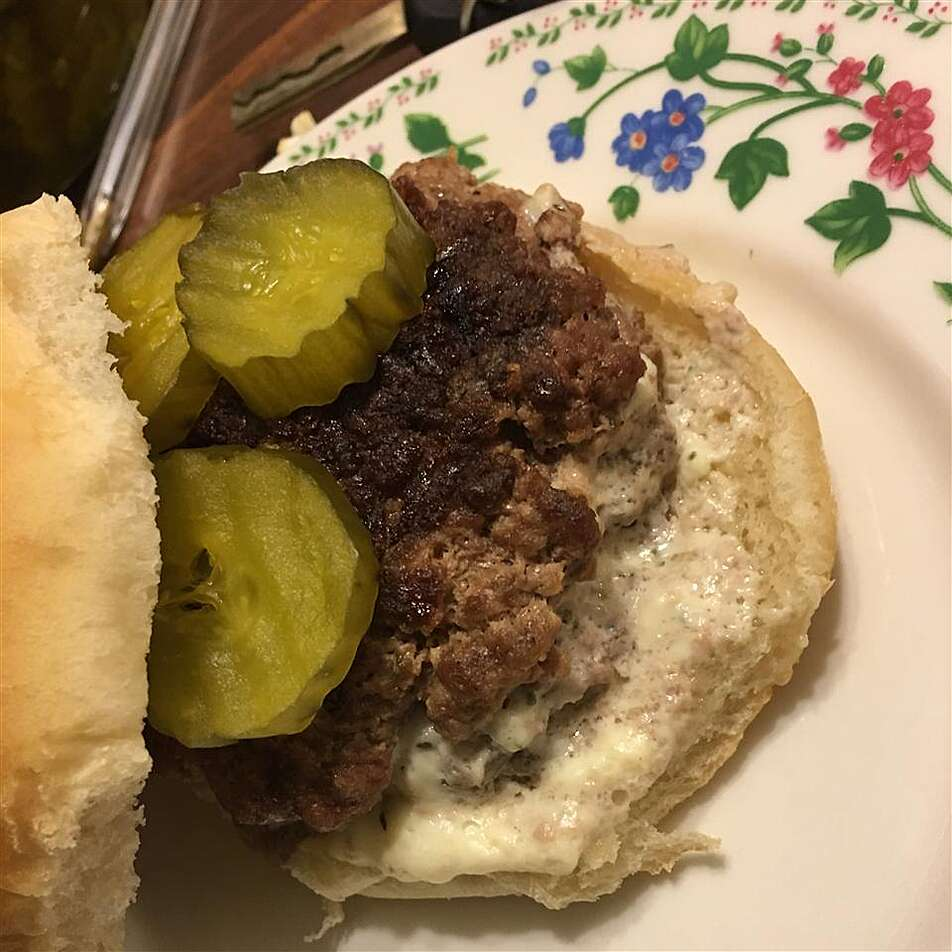

Pancake

Description
A quick and easy recipe for a feta-stuffed hamburger.
Ingredients
- 1 pound lean ground beef
- ½ teaspoon Worcestershire sauce
- 1 teaspoon dried parsley
- salt and pepper to taste
- 1 cup crumbled feta cheese
Steps
- Preheat an outdoor grill for medium heat, and lightly oil the grate.
- Knead together the ground beef, Worcestershire sauce, parsley, salt, and pepper in a bowl. Form the mixture into 8 equal-sized balls; flatten to make thin patties. Place about 1/4 cup of feta cheese onto each of four of the patties. Top each of the patties with cheese with one of the patties without; press the edges together to seal the cheese into the center.
- Cook on the preheated grill until the burgers are cooked to your desired degree of doneness, 7 to 8 minutes per side for well done. An instant-read thermometer inserted into the center should read 160 degrees F (70 degrees C).